CS180 — Project 5: Fun with Diffusion Models
This project explores the power of diffusion models. The project is divided into two parts: Part A investigates the capabilities of large pretrained diffusion models for image generation and editing, while in Part B we develop and train our own diffusion model on the MNIST dataset.
Part A: The Power of Diffusion Models
A.0 Playing with DeepFloyd IF
We begin by exploring the DeepFloyd IF diffusion model, a large pretrained text-to-image model. We test it with various text prompts and compare the quality of generated images at different numbers of inference steps (10 vs 50). As expected, more inference steps yield higher-quality and more coherent images.
10 Inference Steps:
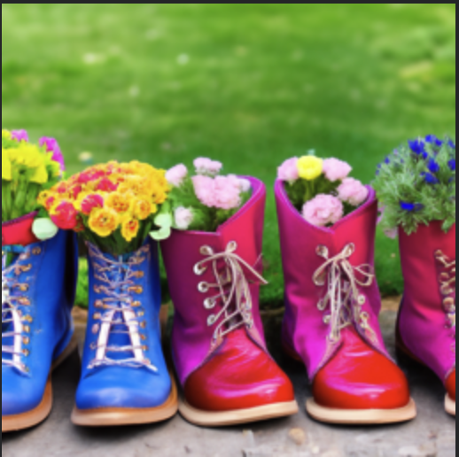
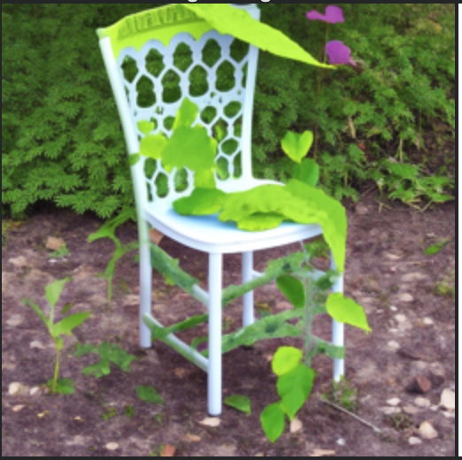
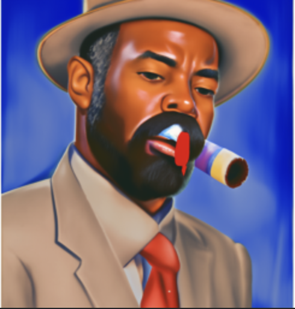
50 Inference Steps:
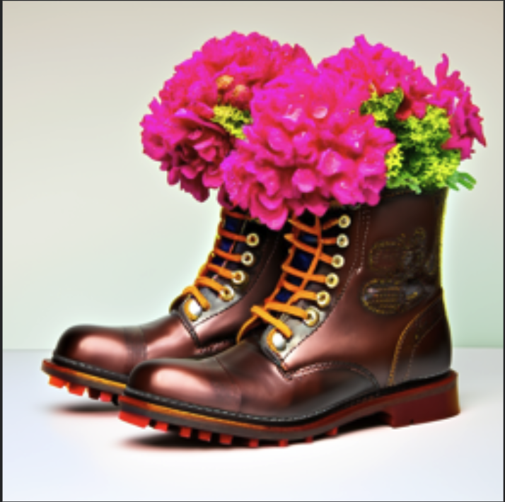
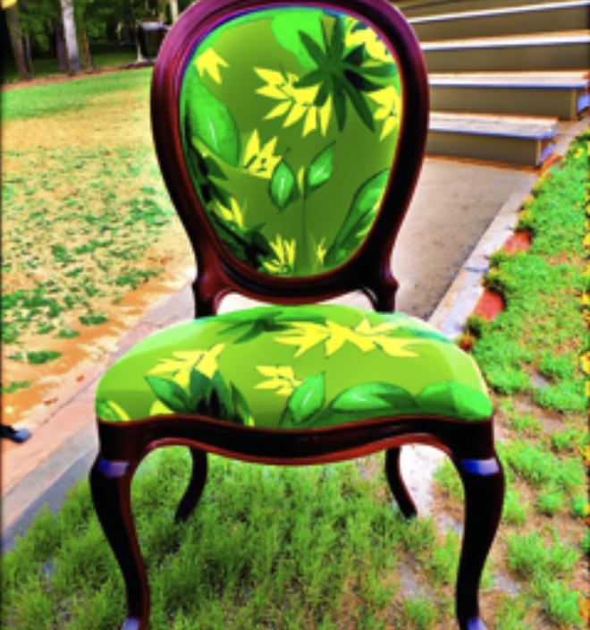
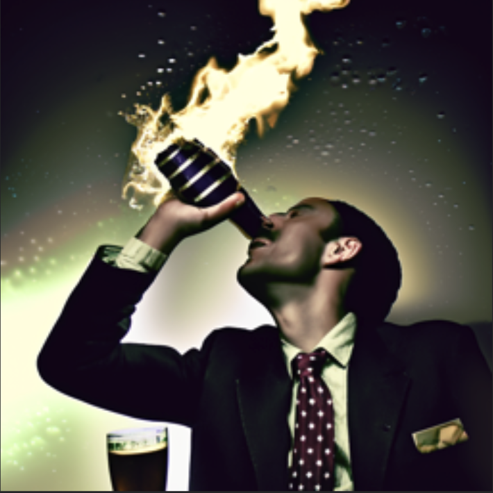
With 50 inference steps, the images are noticeably sharper and more detailed compared to 10 steps. The boots have clearer floral details, the leafy chair is more coherent, and the beer and cigarette scene is more realistic.
A.1.1 Forward Process
The forward (noising) process in diffusion models gradually adds Gaussian noise to a clean image over \(T\) timesteps. The noisy image at timestep \(t\) can be computed directly from the original image \(x_0\) using:
$$q(x_t \mid x_0) = \mathcal{N}\!\left(x_t;\, \sqrt{\bar{\alpha}_t}\, x_0,\ (1-\bar{\alpha}_t)I\right)$$This means we can sample \(x_t\) in closed form:
$$x_t = \sqrt{\bar{\alpha}_t}\, x_0 + \sqrt{1-\bar{\alpha}_t}\,\epsilon,\quad \epsilon \sim \mathcal{N}(0, I)$$Below we show the Campanile test image and the results of applying the forward process at timesteps \(t = 250, 500, 750\):
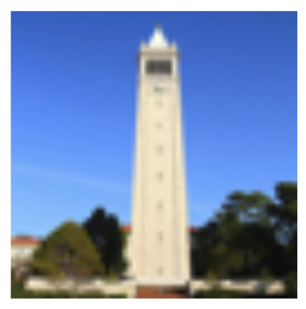


As \(t\) increases, the image becomes progressively noisier, losing more and more of its original structure until it approaches pure Gaussian noise.
A.1.2 Classical Denoising
As a baseline, we attempt to denoise the noisy images using a classical Gaussian blur filter. This is a simple, non-learned approach that cannot recover fine details.
Noisy images:
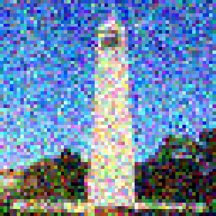
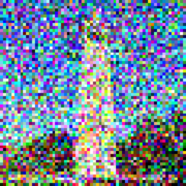
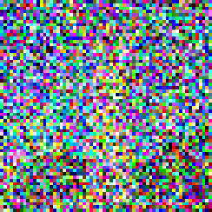
Gaussian blur denoised:
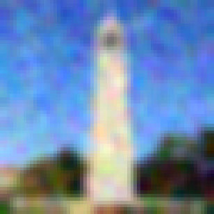
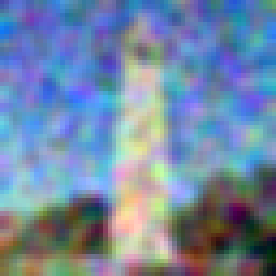
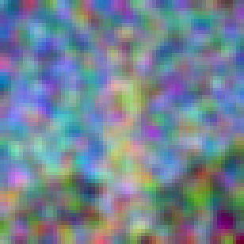
The Gaussian blur removes some noise but also blurs all the details. For higher noise levels, the results are extremely blurry and do not resemble the original image at all.
A.1.3 One-Step Denoising
Instead of classical filtering, we can use a pretrained diffusion model to estimate the noise and recover the clean image in a single step. Given a noisy image \(x_t\) and the predicted noise \(\epsilon_\theta(x_t, t)\), we estimate the clean image as:
$$\hat{x}_0 = \frac{1}{\sqrt{\bar{\alpha}_t}}\left(x_t - \sqrt{1 - \bar{\alpha}_t}\,\epsilon_\theta(x_t, t)\right)$$Noisy images:
One-step denoised:
The one-step denoising with the pretrained model is significantly better than classical denoising, especially at lower noise levels (t=250). At higher noise levels, the model still produces a reasonable estimate but may lose some fine details.
A.1.4 Iterative Denoising
While one-step denoising gives reasonable results, we can do much better by iteratively denoising the image through a sequence of timesteps. At each step, we compute:
$$x_{t'} = \frac{\sqrt{\bar{\alpha}_{t'}} \beta_t}{1 - \bar{\alpha}_t} x_0 + \frac{\sqrt{\alpha_t}(1 - \bar{\alpha}_{t'})}{1 - \bar{\alpha}_t} x_t + v_\sigma$$where \(x_0\) is our current estimate of the clean image, \(t'\) is the next (less noisy) timestep, and \(v_\sigma\) is a noise term. We use a set of strided timesteps to speed up the process while still obtaining high-quality results.
Iterative denoising at various steps:
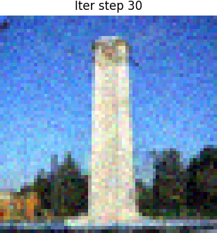
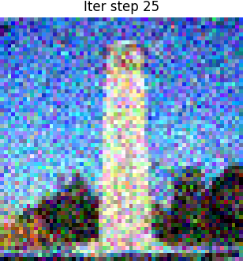
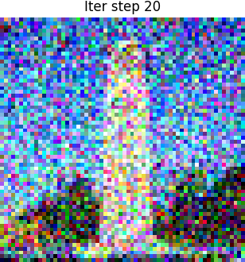
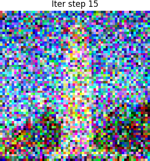
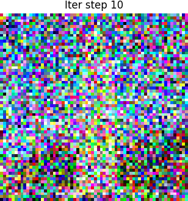
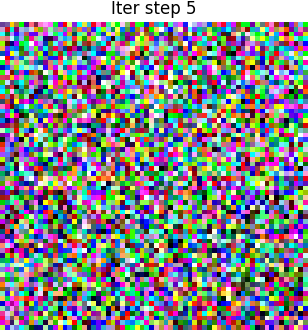
Comparison of final results:
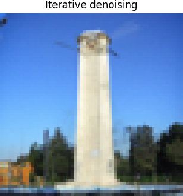
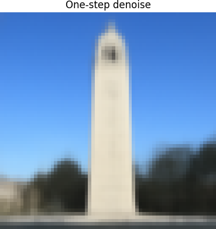
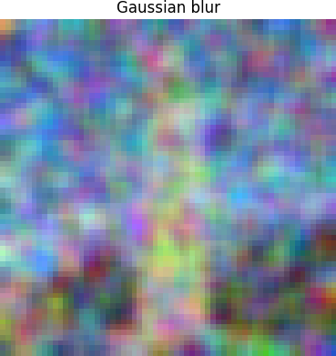
The iterative denoising approach produces the best results by far, recovering sharp details and realistic textures that are lost with both the one-step and Gaussian blur approaches.
A.1.5 Diffusion Model Sampling
By starting from pure noise (\(x_T \sim \mathcal{N}(0, I)\)) and running the iterative denoising process, we can generate entirely new images from the diffusion model. Here are five samples generated with the text prompt "a high quality photo":
The generated images are coherent but somewhat blurry and lack fine detail. This is because we are using only the unconditional noise estimate without any guidance.
A.1.6 Classifier Free Guidance (CFG)
To improve the quality and sharpness of generated images, we use Classifier Free Guidance (CFG). CFG combines the conditional and unconditional noise estimates using a guidance scale \(\gamma\):
$$\epsilon = \epsilon_u + \gamma(\epsilon_c - \epsilon_u)$$where \(\epsilon_u\) is the unconditional noise estimate and \(\epsilon_c\) is the conditional noise estimate. A higher \(\gamma\) pushes the generation more strongly toward the text prompt, yielding sharper and more coherent images at the cost of reduced diversity.
Compared to the unconditional samples in A.1.5, the CFG samples are noticeably sharper and more detailed. The images are more coherent and look like realistic photographs.
A.1.7 Image-to-image Translation
By adding noise to an existing image and then denoising it, we can perform image editing. The key idea is to add noise to the image up to some intermediate timestep \(i_{\text{start}}\) and then run the iterative denoising process from there. A smaller \(i_{\text{start}}\) means more noise is added and the result diverges more from the original, while a larger \(i_{\text{start}}\) preserves more of the original structure.
A.1.7.1 Editing Hand-Drawn and Web Images
We apply the SDEdit algorithm to hand-drawn sketches and web images. By varying the noise level (\(i_{\text{start}}\)), we can control how much the diffusion model "reimagines" the original image.
Avocado (web image):
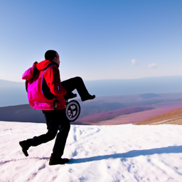
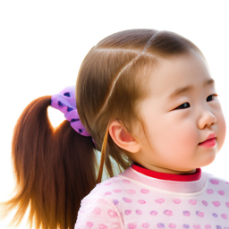
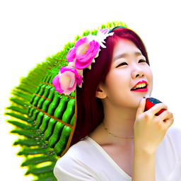
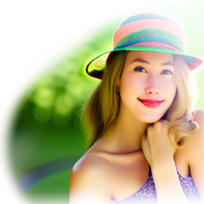
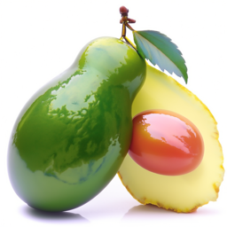
Hand-drawn sketch 1:
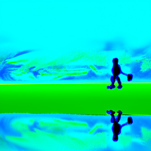
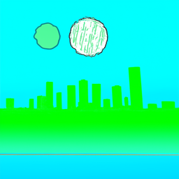
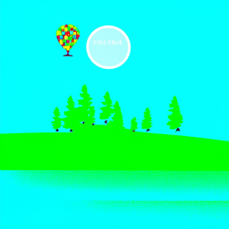
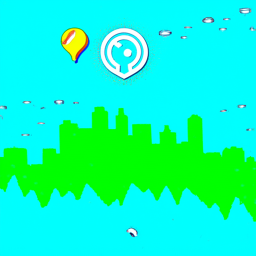
Hand-drawn sketch 2:
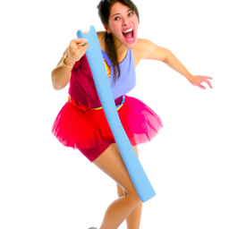
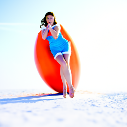
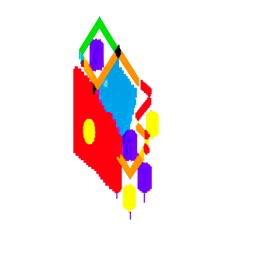
At low \(i_{\text{start}}\) values, the model generates images that bear little resemblance to the original input. As \(i_{\text{start}}\) increases, the generated images increasingly preserve the structure and content of the original, while still adding realistic details and textures.
A.1.7.2 Inpainting
We can also use diffusion models for inpainting — filling in a masked region of an image. At each denoising step, we replace the unmasked portion with the appropriately noised version of the original image:
$$x_t \leftarrow m \cdot x_t + (1 - m)\cdot \text{forward}(x_{\text{orig}}, t)$$where \(m\) is the binary mask (1 inside the region to inpaint, 0 outside). This forces the model to generate new content only within the masked region while keeping the rest of the image intact.
Campanile:
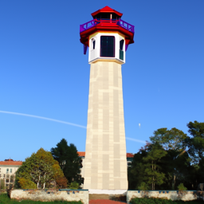
Basketball:
Jump:
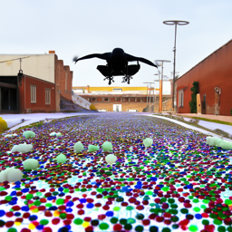
The diffusion model does a remarkable job of filling in the masked regions with content that is both realistic and contextually appropriate.
A.1.7.3 Text-Conditional Image-to-image Translation
We can combine SDEdit with text conditioning to guide the image editing process. By providing a text prompt, we can steer the diffusion model to generate content that matches the desired description while preserving the overall structure of the original image.
Campanile → "a rocket ship":
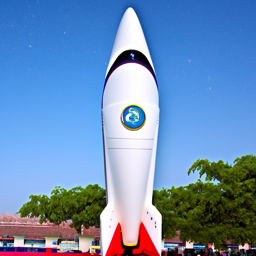
"a chair that looks like a leafy plant":
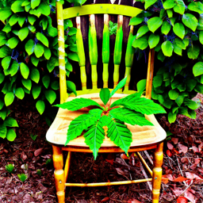
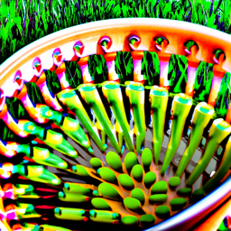
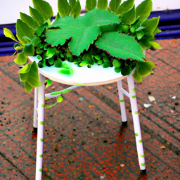
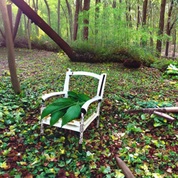
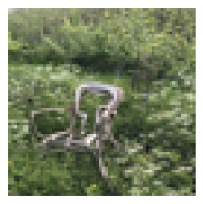
"a beer next to a cigarette":
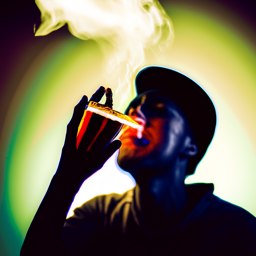
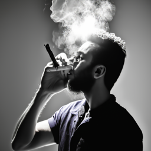
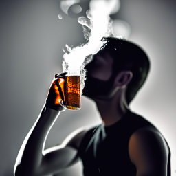
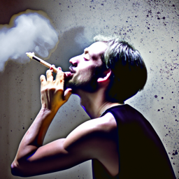
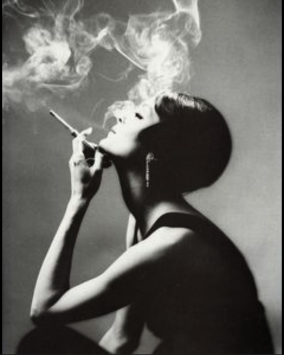
The text-conditional approach successfully transforms images to match the target prompt while maintaining the general composition and structure of the original. Lower \(i_{\text{start}}\) values produce more dramatic transformations.
A.1.8 Visual Anagrams
Visual anagrams are images that look like one thing right-side up and something else when flipped upside down. We create these by averaging the noise estimates from two different orientations at each denoising step:
$$\epsilon = \frac{1}{2}\left(\epsilon_1 + \text{flip}(\epsilon_2)\right)$$where \(\epsilon_1\) is the noise estimate for the upright prompt and \(\epsilon_2\) is the noise estimate for the flipped prompt. This ensures the final image is coherent from both orientations.
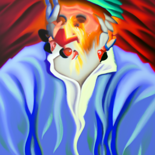
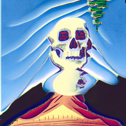
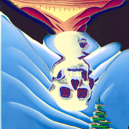
The visual anagrams are surprisingly effective — each image clearly depicts one subject when viewed normally and a completely different subject when flipped upside down.
A.1.9 Hybrid Images
Inspired by factorized diffusion, we can create hybrid images that show different content at different viewing distances. We use low-pass and high-pass filtering on the noise estimates from two different prompts:
$$\epsilon = f_{\text{low}}(\epsilon_1) + f_{\text{high}}(\epsilon_2)$$where \(f_{\text{low}}\) is a low-pass filter and \(f_{\text{high}}\) is a high-pass filter. The result is an image where the low-frequency content (visible from far away) corresponds to one prompt and the high-frequency content (visible up close) corresponds to another.
When viewed from far away (or squinting), the low-frequency content dominates, and when viewed up close, the high-frequency details become visible, revealing the second image.
Part B: Training Our Own Diffusion Model
B.1 Single-Step Denoising UNet
In Part B, we implement and train our own diffusion model from scratch on the MNIST handwritten digit dataset. We start by building a simple UNet architecture for single-step denoising, then progressively add time conditioning and class conditioning to build a full generative model.
B.1.2 Training a UNet Denoiser
We train a UNet to denoise noisy MNIST images. Given a clean image \(x_0\), we create a noisy version by adding Gaussian noise:
$$x_{\text{noisy}} = x_0 + \sigma \cdot \epsilon, \quad \epsilon \sim \mathcal{N}(0, I)$$The model is trained to minimize the mean squared error (MSE) between the predicted clean image and the ground truth:
$$\mathcal{L} = \| \hat{x}_0 - x_0 \|^2$$Visualization of noisy training images at various noise levels:
B.1.2.1 Training Pipeline
We train the UNet with the following hyperparameters:
- Batch size: 256
- Learning rate: 1e-4
- Optimizer: Adam
- Number of epochs: 5
- Noise level \(\sigma\): randomly sampled from \(\mathcal{U}(0.0, 1.0)\)
The loss function is the L2 (MSE) loss between the predicted denoised image and the ground truth clean image:
$$\mathcal{L} = \mathbb{E}_{x_0, \sigma}\left[\| D_\theta(x_0 + \sigma\epsilon) - x_0 \|^2\right]$$Results after Epoch 1:
Results after Epoch 5:
Training loss curve:
The model quickly learns to denoise images, with significant improvement between epoch 1 and epoch 5. The training loss decreases smoothly and converges.
B.1.2.2 Out-of-Distribution Testing
We test the trained denoiser on out-of-distribution noise levels to see how well it generalizes. The model was trained with noise levels sampled uniformly from [0, 1], so we test it on noise levels outside this range.
The model generalizes reasonably to moderate out-of-distribution noise levels, but performance degrades for noise levels far outside the training range.
B.1.2.3 Denoising Pure Noise
We test what happens when we feed pure noise (\(\sigma = 1.0\)) into the denoiser. This is interesting because the input contains no signal from the original image.
Pure noise denoising after Epoch 1:
Pure noise denoising after Epoch 5:
Training loss curve:
When given pure noise, the denoiser attempts to produce digit-like images. After more training, the outputs look more like actual digits, suggesting the model has learned some prior over the digit manifold.
B.2 Conditioning the UNet
To build a proper generative model, we extend the UNet with conditioning. We adopt a flow matching / DDPM-style approach where the model predicts the velocity (or noise) rather than the clean image directly. We add time conditioning so the model knows the current noise level, and later add class conditioning so we can generate specific digit classes.
B.2.2 Training the Time Conditioned UNet
We train a time-conditioned UNet where the timestep \(t\) is provided as an additional input to the model. This allows the model to adapt its denoising strategy based on the current noise level.
The time-conditioned model converges smoothly and achieves lower loss than the unconditioned version, as the model can specialize its denoising behavior for each noise level.
B.2.3 Sampling from the UNet
We sample from the time-conditioned UNet by starting from pure noise and iteratively denoising through a sequence of timesteps. Below are samples generated at different stages of training:
Samples after Epoch 1:
Samples after Epoch 5:
Samples after Epoch 10:
The quality of generated samples improves dramatically over training. By epoch 10, the model generates clear, recognizable handwritten digits.
B.2.5 Class Conditioning
We further extend the model with class conditioning, allowing us to generate specific digit classes (0-9). The class label is provided as a one-hot vector and injected into the UNet alongside the time embedding. During training, we randomly drop the class label (replacing it with a null token) 10% of the time to enable classifier-free guidance at inference.
Training curve (with learning rate scheduling):
Training curve (without learning rate scheduling):
Learning rate scheduling helps the model converge to a lower final loss and produces more stable training dynamics.
B.2.6 Class Conditioning Sampling
We sample from the class-conditioned model using classifier-free guidance (CFG). At each denoising step, we compute both the conditional and unconditional velocity estimates and combine them:
$$v = v_{\text{uncond}} + \gamma \bigl(v_{\text{cond}} - v_{\text{uncond}}\bigr)$$where \(\gamma\) is the guidance scale. Higher \(\gamma\) values produce samples that more closely match the target class, at the cost of reduced diversity.
Samples with LR scheduling:
Epoch 1:
Epoch 5:
Epoch 10:
Samples without LR scheduling:
Epoch 1:
Epoch 5:
Epoch 10:
The class-conditioned model with CFG produces high-quality, class-specific digits. The model with learning rate scheduling generally produces cleaner samples, especially at later epochs. By epoch 10, the generated digits are sharp, diverse, and clearly recognizable as their target classes.